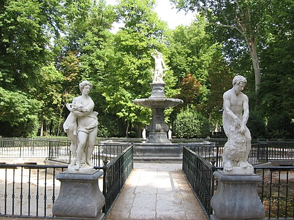

Claro que sí. La galería del Jardín de la Isla de Aranjuez es un espacio que se extiende a lo largo de la calle central del jardín, que une el Palacio Real con el río Tajo. Fue construida en el siglo XVI, durante el reinado de Felipe II, y originalmente estaba cubierta por un túnel de madera que proporcionaba sombra y frescura a los paseantes.
En el siglo XVIII, la galería fue reformada por orden de Carlos III, quien la convirtió en un espacio más abierto y luminoso. Se eliminaron los túneles de madera y se plantaron árboles a ambos lados de la calle, dando lugar a una galería de estilo francés.
La galería está decorada con varias estatuas de mármol, entre las que destacan las de Neptuno, Venus, Baco y Hércules. También hay varios bancos y fuentes, que hacen de este espacio un lugar ideal para pasear, descansar o disfrutar de la naturaleza.